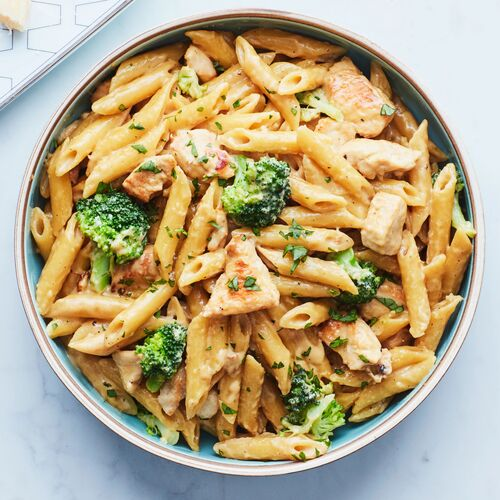

Chicken Alfredo Penne

Description
Chicken Alfredo Penne is a classic Italian-American pasta dish
that is creamy, comforting, and delicious.
It's made with tender chicken breast, cooked penne pasta,
and a rich and creamy Alfredo sauce that is flavored with garlic,
Parmesan cheese, and heavy cream.
This dish is easy to make and perfect for a cozy weeknight dinner at home.
Ingredients
- 1 lb. penne pasta
- 2 tbsp. olive oil
- 1 lb. boneless, skinless chicken breast, cut into bite-sized pieces
- Salt and pepper, to taste
- 4 garlic cloves, minced
- 1 cup heavy cream
- 1 cup grated Parmesan cheese
- 1/4 cup chopped fresh parsley
Steps
- Cook the penne pasta according to the package directions until it's al dente.
Drain the pasta and set it aside.
-
In a large skillet, heat the olive oil over medium-high heat.
Add the chicken and season it with salt and pepper.
Cook the chicken for 5-7 minutes, or until it's cooked through and golden brown.
-
Add the minced garlic to the skillet and cook it for 1-2 minutes, or until it's fragrant.
-
Reduce the heat to low and pour the heavy cream into the skillet.
Add the grated Parmesan cheese and stir until the cheese is melted and the sauce is smooth.
-
Add the cooked penne pasta to the skillet and
toss it with the Alfredo sauce until the pasta is coated.
-
Serve the Chicken Alfredo Penne hot, garnished with chopped
fresh parsley. Enjoy!
Return to homepage